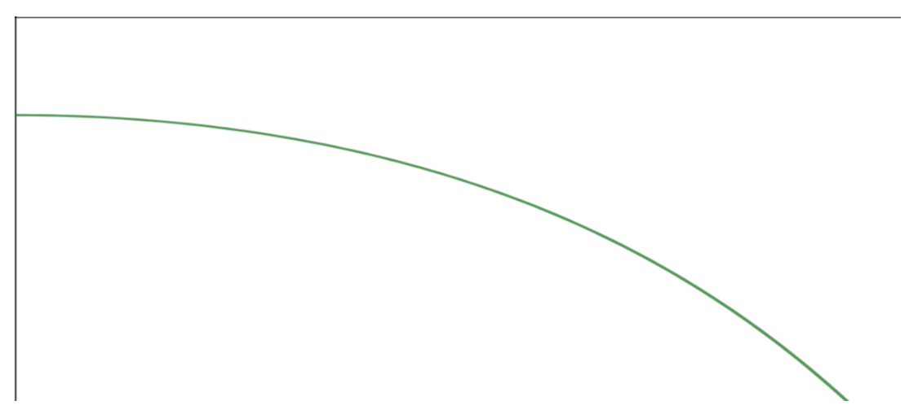
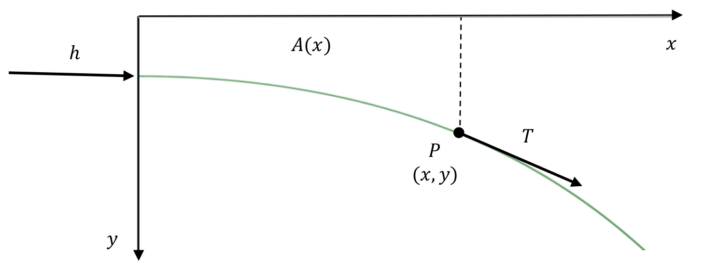
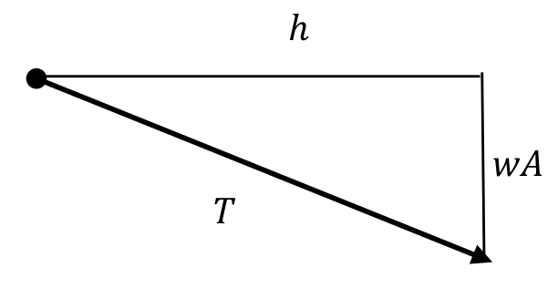
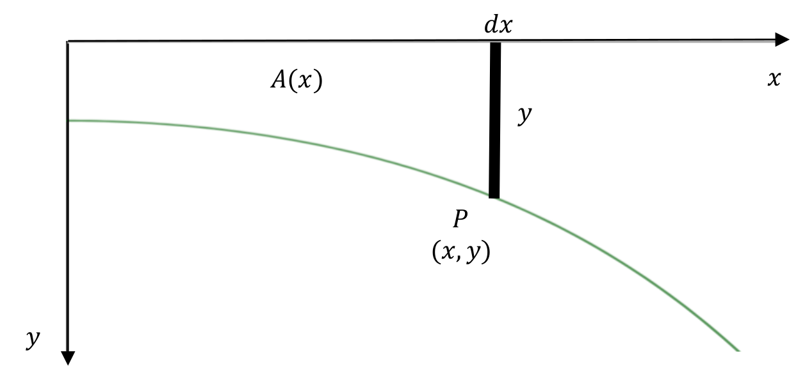
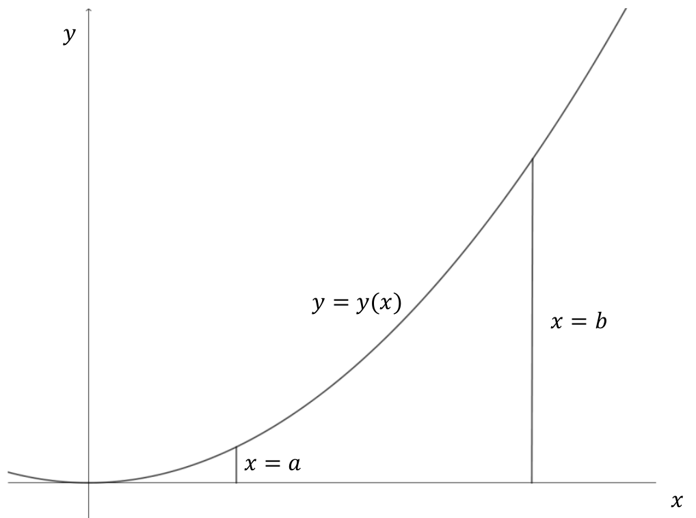

Recall, much earlier, that we examined the catenary (hanging chain). We showed that the catenary was not a parabola as Galileo had mentioned. The idea of a catenary was (and is) important in engineering in the construction of arches. Masons before Galileo’s time were aware of the fact that the “best” arches were in the shape of an inverted catenary, and they constructed wooden frames for their stone utilizing a hanging chain for the correct shape. This can be seen in the following example.
Example2.48.Stone Arch Bridge.
Consider one half of a stone arch bridge as drawn below.

Figure2.49.Schematic of a stone arch
We will draw the positive \(y\)-axis downward and will focus on the forces at a generic point \(P\) with coordinates \((x, y)\text{.}\) The problem is to find the curve \(y=y(x)\) so that the vertical component of the tangential force \(T\) at \(P\) is equal to the weight of the bridge from \(0\) to \(x\text{.}\) If we do this, then that means that the weight of the bridge will be directed toward the base of the bridge. With this in mind, let \(A(x)\) denote the area of the side section of the bridge from \(0\) to \(x\text{.}\) We will also let \(y\) denote the (constant) magnitude of the horizontal force along the length of the bridge and \(w\) be the weight density of the stone (per cross sectional area).

Figure2.50.Stone Arch Schematic
With all of this set up, what we really want is the horizontal component of the force \(T\) to be \(h\) and the vertical component to be the weight of the bridge from \(0\) to \(x\text{,}\) namely, \(wA\text{.}\) This leads to the following picture.

Figure2.51.Stone Arch Triangle of Forces
This leads to the slope of the tangent line at \(P\) equaling \(\frac{wA}{h}\text{,}\) so we get the differential equation
The problem here is that we don’t know what \(A\) is. However, a moment’s thought tells us that we know what \(\dx{A}{}\) is. If we increase \(x\) to \(x+\dx{x}{}\text{,}\) then we can see that \(\dx{A}=y\dx{x}{}\text{.}\)

Figure2.52.Stone Arch Schematic
Thus, if we differentiate the above equation, we get that the arch should satisfy the differential equation
Show that if \(y(0)=\sqrt{\frac{h}{w}}\) and \(\brackeval{\dfdx{y}{x}}{x}{0}=0\text{,}\) then \(A=B=\frac12{}\sqrt{\frac{h}{w}}\text{.}\) Compare this to the equation of the catenary in Problem in Context #53 in Differential Calculus.
While it is interesting that the above example illustrates the importance of catenaries in engineering, the important thing for us is that \(\dx{A}=y\dx{x}\text{.}\) Thus
which relates integrals to areas. This relationship was known to both Newton and Leibniz, as well as some of their predecessors. It is of such importance that it is known as the Fundamental Theorem of Calculus.
To make this a bit more concrete, let’s set this up a bit more carefully. Suppose we start with a curve \(y=y(x)\) where \(y\ge{0}\) for \(a\le{x}\le{b}\text{,}\) and we wish to find the area of the region bounded by the curves \(y=y(x)\text{,}\)\(y=0\text{,}\)\(x=a\text{,}\) and \(x=b\)

Figure2.54.The area under a curve
We used the notation \(\int{y}\dx{x}\) to denote a sum of differentials and called this integration with the idea that it was the opposite of differentiation and provided a notation for the antiderivative to the function \(y\text{.}\) In examining a situation like we have with areas above, we will modify our notation a bit to
to emphasize that we are adding differentials from \(x=a\) to \(x=b\text{,}\) so that \(\int_{x=a}^by\dx{x}\) represents a specific number (in this case area), whereas \(\int{y}\dx{x}{}\) represents an antiderivative which is a family of functions differing by arbitrary constants. With this in mind, \(\int_{x=a}^by\dx{x}\) is called the definite integral of \(y\dx{x}{}\) from \(x=a\) to \(x=b\) and \(\int{y}\dx{x}{}\) is called the indefinite integral of \(y\dx{x}{}\text{.}\) So, the definite integral is a specific number while the indefinite integral is a family of functions. If using almost the same notation seems confusing at this point, it is brought together by the Fundamental Theorem of Calculus.
Theorem2.55.The Fundamental Theorem of Calculus.
Suppose that \(\dfdx{A}{x}=y\) (so that \(A\) is an antiderivative of \(y\)). Then
As was mentioned before, this result was known to both Newton and Leibniz and was first publish in a short paper by Leibniz in 1693. The idea is so surprisingly simple and profound, that it warrants an (apocryphal) story. When Leibniz was a young diplomat in Paris, he sought Christian Huygens who, at the time, was one of the most brilliant mathematicians in the world. Leibniz credited much of his mathematical growth in Paris to Huygens. The idea for summing differences came to Leibniz from a problem given to him by Huygens in 1672, namely to compute the following sum
and noted that nearly all of the fractions cancelled out leaving \(1-\frac{1}{\infty{}}=1-0=1\text{.}\)
The importance of this was not the result, but the technique, namely that the sum of differences is equal to the difference of the extremes. Applying this same principle to the Fundamental Theorem of Calculus, we have
This was so quick, that it probably deserves a picture. Consider the picture below of the two functions \(y\) and \(A\) related by the fact that \(\dfdx{A}{x}=y\text{.}\)
Figure2.56.Visual representation of the FTC
Notice that since \(y\dx{x}=\dx{A}{}\text{,}\) then this says that the area of the box with width \(\dx{x}{}\) and height \(y\) in the first diagram is numerically the same as the length \(\dx{A}{}\) of the segment in the second diagram. Of course, these represent corresponding generic boxes and segments. If we add all of these together, the sum of the areas of the boxes in the first diagram will provide the area of the region; the sum of the lengths of the segments in the second diagram will provide the length of the segment from \(A(a)\) to \(A(b)\text{.}\) In other words, we have
which is what the Fundamental Theorem of Calculus says.
It is hard to overstate the importance of this result. (Not everything is called a Fundamental Theorem.) In many applications, we will have a need to add all of the differentials which may or may not represent areas. After we set up this sum, computation will bring us back to our old problem of computing antiderivatives. For now, let’s just focus on computation of definite integrals via the Fundamental Theorem of Calculus. With the Fundamental Theorem of Calculus in mind, we introduce the following notation. If \(\dfdx{A}{x}=y\) then
The symbol \(\left.A(x)\right|_{x=a}^b\) is read aloud as “\(A\) of \(x\) evaluated from \(x=a\) to \(x=b\)” and is the difference between \(A(b)\) and \(A(a)\text{.}\) Again, this is purely notational.
Problem2.57.
Given our notation for an indefinite integral, the Fundamental Theorem of Calculus says
However, there are infinitely many possibilities for \(\int{y}\dx{x}\text{.}\) Does this mean that there are infinitely many possibilities for \(\int_{x=a}^by\dx{x}{}\text{?}\) Explain.